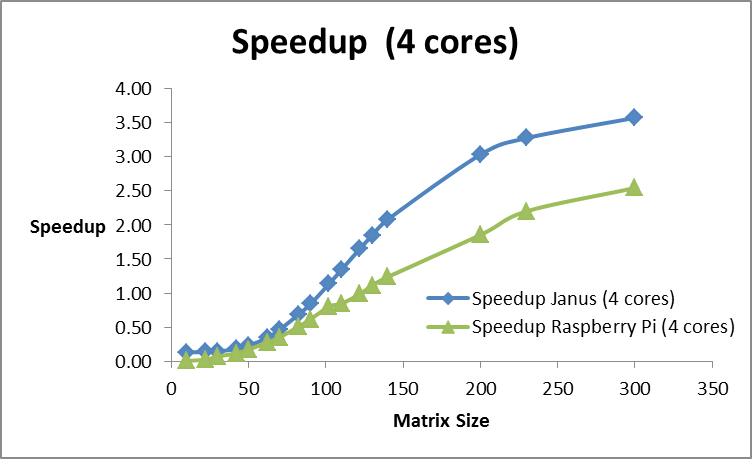

Once Out System was built we ran a series of tests to see what how our system Scaled compared to that of our super computer janus.
The Jacobi program is an algorthim for detirmining a the solution to a series of linear equaions. We then too the code wriiten for this solution executed and timed it on the Raspberry Pi cluster, using 1 and 4 processors. The same program was executed on Janus, our school's supercomputer.
As the problem size increased, the speedup noticed on the Pi cluster was about 2.5, while the speedup noticed on Janus was about 3.5.

We believe that this is due to large communication costs between the Raspberry Pis. Instead of the infiniband network used on Janus, the Raspberry Pis were connected with simple1 Gbit/s Ethernet cables. Compared to Janus, a single Raspberry Pi processor has about 25% of the clock speed. However, the time to compute the Jacobi was about 20 times faster on a single core on Janus compared to a single Raspberry Pi. We believe that the difference is due to better CPU pipelining and memory access on the Janus CPU. The time to compute the Jacobi solution with four raspberry pis took about 30 times longer than with four cores on Janus. We believe that the decrease in the performance of the raspberry pis is due to the increased communication cost associated with the slower network speed. When compared to a single core on Janus, 4 raspberry pis working in parallel still took about 10 times longer to solve.
Stream Benchmark is a benchmark that measures memory bandwidth for a particular system. Stream adds the amount of data that the application reads and adds it to the amount of data the application writes.
Out of all of the benchmarks ran stream was probably the easiest to install. Just follow the following 3 steps to install.
NAS is a benchmark from NASA and is a set of 8 small programs
to measure the result of supercomputers. Realize that most the simulations and use that NASA has for supercomputer are for computational fluid dynamics or CFD
here is a list of the test
LINPACK benchmark is one of the most widley used benchmarks in the field of High Preformance Computing, and is also one of the most frustrating and diffiult benchmarks to run.
We as well as a slough of other people had issues running LINKPACK on both our school's supercomputer and our raspberry pi cluster
We see this as a general flaw in the system and are currently working on developing a standardized Linpack for PI's